NASA SPACE APPS CHALLENGE · MENDOZA · 13-11-2026
Big Data e IA: cómo una imagen del espacio predice mercados financieros.
Lucas Trubiano · Data & Cloud Consultant · Trubi Data
trubi▮data
EL GANCHO
70 %
de ocupación
21 de 30 lugares
AÑOS 70 · SAM WALTON
El fundador de Walmart sobrevolaba los estacionamientos de sus locales y de la competencia, y contaba autos.
HOY · SATÉLITES
Fondos de inversión compran ese conteo, hecho con imágenes, para miles de locales.
≈ 4,7 %
de retorno en los 3 días alrededor del balance, operando con esa señal.
Estacionamiento: ejemplo ilustrativo. Retorno: Katona, Painter, Patatoukas y Zeng, JFQA.
trubi▮data
QUÉ SE PUEDE HACER CON LOS DATOS
01 · DESCRIPTIVA
La cosecha de soja 2022/23 fue de 25 millones de toneladas.
02 · DIAGNÓSTICA
Hubo sequía: el verdor estuvo muy por debajo de lo normal.
03 · PREDICTIVA
En marzo, un modelo anticipa cuánto va a rendir cada departamento.
04 · PRESCRIPTIVA
Dónde tasar daños primero, cuánto comprar, qué zona asistir.
trubi▮data
FUNDAMENTOS · 1
DATO
«NDVI = 0,38 en este píxel.»
Sin contexto no dice nada.
INFORMACIÓN
«En enero de 2023 la zona sojera estuvo 0,14 por debajo de lo normal.»
Dónde, cuándo, contra qué.
CONOCIMIENTO
«Cuando el verdor cae así en enero, la cosecha cae.»
Relación aprendida de muchos casos.
DECISIÓN
«Ajusto compras y logística antes de la cosecha.»
Acá aparece el valor.
Cada escalón agrega contexto. La IA ayuda sobre todo en el tercero: encontrar la relación.
trubi▮data
FUNDAMENTOS · 2
| La V | Qué significa | En satélites |
|---|---|---|
| Volumen | No entra en tu máquina | 53 millones de observaciones para 6 imágenes |
| Velocidad | Llega todo el tiempo | Una imagen nueva cada pocos días |
| Variedad | Formatos distintos | Imágenes, lluvia, estadísticas, precios |
| Veracidad | No todo sirve | Nubes, sombras, píxeles rotos |
La regla práctica: si no podés abrirlo en una planilla, cambia la forma de trabajar.
Se lleva el cálculo a donde están los datos, no los datos a tu máquina.
Observaciones: embudo del repo, MODIS ene-mar 2023.
trubi▮data
FUNDAMENTOS · 3
| Tipo | Qué hace | Ejemplo |
|---|---|---|
| Reglas | Sigue condiciones escritas a mano | «Si NDVI < 0,3, alerta» |
| Machine learning clásico | Aprende de tablas con ejemplos | Predecir el rinde con verdor y lluvia ← hoy |
| Deep learning (visión) | Aprende directo de imágenes | Contar autos o detectar tanques |
| IA generativa y LLM | Genera texto, código o imágenes | Escribir el código, explicar un resultado |
| Agentes | Un LLM que usa herramientas y encadena pasos | Armar este análisis de punta a punta |
Cada tipo incluye al anterior como herramienta. El más nuevo no es el mejor para todo: para una tabla chica, gana el clásico.
trubi▮data
DATOS · 1
Cada píxel es una fila. Cada banda, una columna.
Una foto común tiene tres bandas: rojo, verde y azul. Un satélite suma otras que el ojo no ve, como el infrarrojo cercano.
# verdor: las plantas sanas reflejan mucho infrarrojo y poco rojo
NDVI = (infrarrojo − rojo) / (infrarrojo + rojo)
Va de −1 a 1. Suelo desnudo: cerca de 0,2. Cultivo en su pico: 0,7 a 0,8.
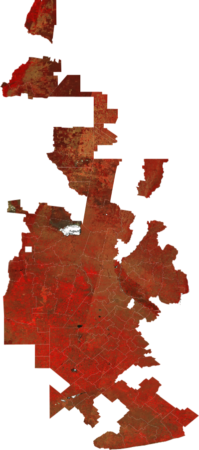
Imagen: NASA MODIS vía Google Earth Engine, generada en el repo.
trubi▮data
DATOS · 2
| Satélite | Píxel | Vuelve cada | Sirve para | Costo |
|---|---|---|---|---|
| MODIS (NASA) | 250 m | 16 días * | Cultivos por región, desde 2000 | Gratis |
| Landsat (NASA/USGS) | 30 m | 16 días | Lotes, cambios de uso del suelo | Gratis |
| Sentinel-2 (ESA) | 10 m | 5 días | Lotes chicos, incendios, agua | Gratis |
| Comerciales | 0,3 a 0,5 m | a pedido | Autos, barcos, techos | Pago |
Un auto mide 4 metros: no entra en un píxel de 10. Con el problema elegido, chequeá que exista un dato que lo vea.
* Producto de verdor MOD13Q1, compuesto de 16 días.
trubi▮data
DATOS · 3
IMÁGENES
Sentinel, Landsat, MODIS y cientos de colecciones.
EVENTOS Y CLIMA
Focos de incendio, casi en tiempo real.
Lluvia diaria desde 1981.
Qué hay en cada píxel: cultivo, bosque, ciudad.
LO QUE QUERÉS PREDECIR
Cosechas por departamento, INDEC.
Precios de materias primas.
Producción mundial por país.
Sumá los recursos de cada desafío de Space Apps: ya vienen con los datasets sugeridos.
trubi▮data
DATOS · 4
26 años de imágenes de media Argentina no entran en tu notebook. Tampoco hace falta.
# le decís al servidor qué calcular; vuelve solo el resultado
ndvi = modis.filterDate("2023-01-01", "2023-04-01").max()
tabla = ndvi.reduceRegions(departamentos, ee.Reducer.mean())
El cálculo corre en Google. Gratis para uso no comercial.
Un buscador estándar de imágenes: por zona, fecha y nubes.
Archivos que se leen de a pedazos: bajás solo tu recorte.
trubi▮data
PROCESAR · 1
01 CRUDO
53,4 M
observaciones crudas
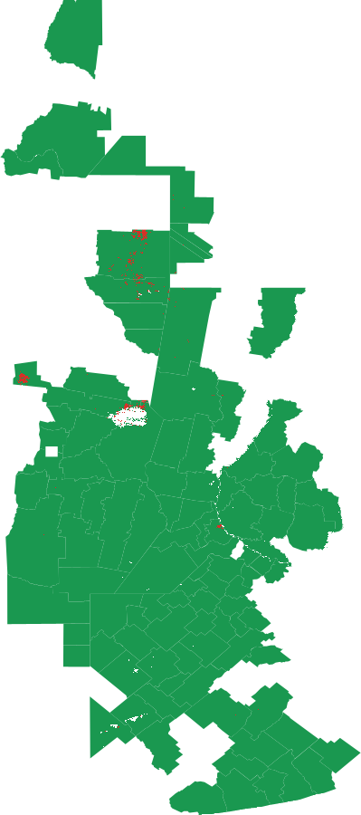
02 CALIDAD
52,8 M
sin nubes ni sombras
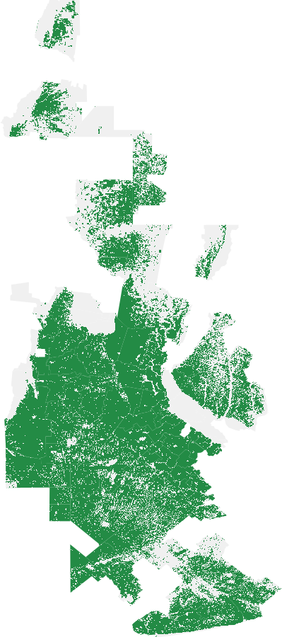
03 MÁSCARA
31,6 M
solo en cultivo
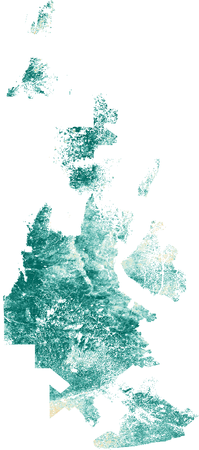
04 RESUMIR
1 valor
el máximo por píxel
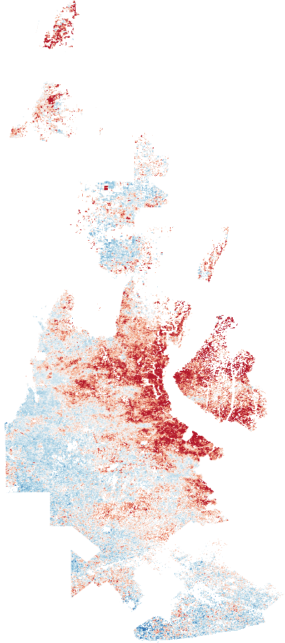
05 COMPARAR
100 filas
una por departamento
Procesar es tirar lo que no sirve y resumir lo que queda.
Cada paso responde una pregunta: ¿es confiable?, ¿es lo que me interesa?, ¿cómo lo resumo?
Zona sojera, ene-mar 2023. NASA MODIS, ESA WorldCover. Embudo del repo.
trubi▮data
PROCESAR · 2
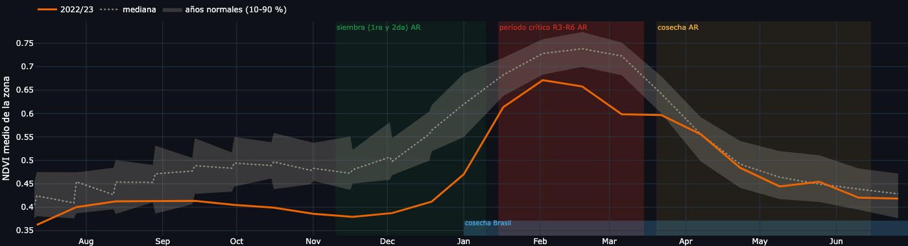
Estacionalidad
El campo siempre está más verde en febrero que en agosto. Eso no es noticia.
Anomalía
Comparar cada fecha contra la misma fecha de otros años. La línea naranja contra la banda gris.
Vale para todo
Ventas, tráfico, temperatura: primero sacá el patrón que se repite.
NDVI medio de 100 departamentos sojeros. NASA MODIS, dashboard del repo.
trubi▮data
PROCESAR · 3
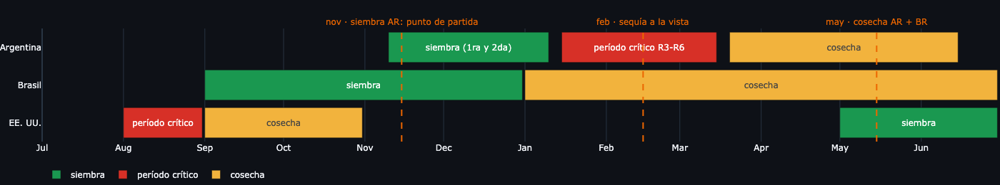
15-ENE A 15-MAR
Se forma y se llena el grano. Si falta agua, el rinde no se recupera.
ENERO Y FEBRERO
El dato oficial de cosecha llega recién en abril o mayo.
BRASIL
Antes que Argentina. Por eso pesa en el precio.
Calendarios de cultivo de USDA IPAD; período crítico según la Bolsa de Comercio de Rosario (GEA, 30-01-2025).
trubi▮data
PREDECIR · EL CASO
100 departamentos × 25 campañas = 2.500 filas. Verdor y lluvia del satélite, rinde oficial del Ministerio.
trubi▮data
PREDECIR · 1
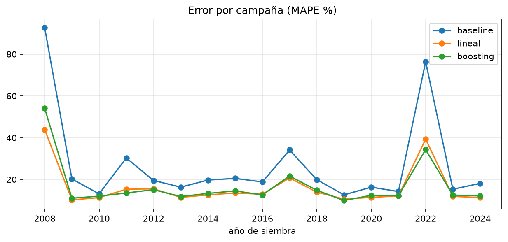
27 %
baseline: el promedio histórico
16 %
regresión lineal con satélite
El modelo complejo (boosting) dio 17 %: no le ganó al simple.
En años normales los tres andan parecido. La diferencia aparece en las sequías.
Rinde: MAGyP. Features: MODIS y CHIRPS. Validación hacia adelante, notebook del repo.
trubi▮data
PREDECIR · 2
SIN SATÉLITE
2.644
kg/ha esperados: un año normal.
CON SATÉLITE
1.890
kg/ha según el modelo, antes de cosechar.
LO QUE PASÓ
1.720
kg/ha reales, publicados meses después.
El modelo no acertó el número exacto. Acertó la dirección y el tamaño, con meses de ventaja.
Rinde real: MAGyP. Predicción: regresión lineal entrenada con campañas anteriores.
trubi▮data
PREDECIR · 3
VERDOR → TONELADAS
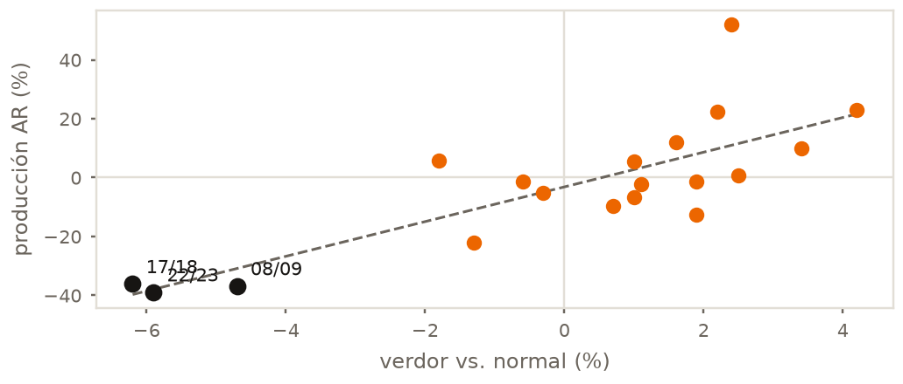
+0,79
El verdor de enero a marzo anticipa la cosecha argentina.
TONELADAS → PRECIO
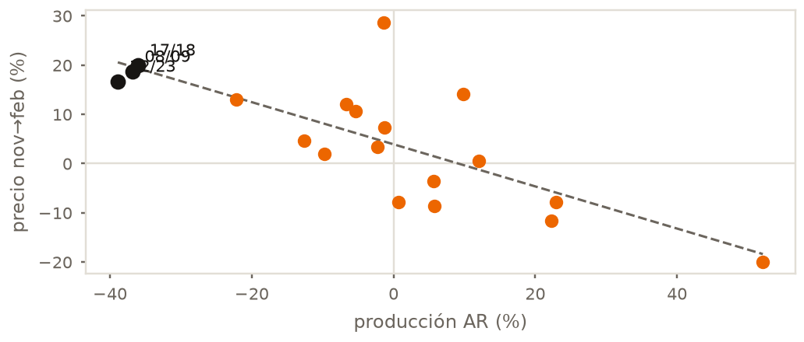
−0,76
Menos soja argentina, más cara la harina de noviembre a febrero.
+ BRASIL → PRECIO
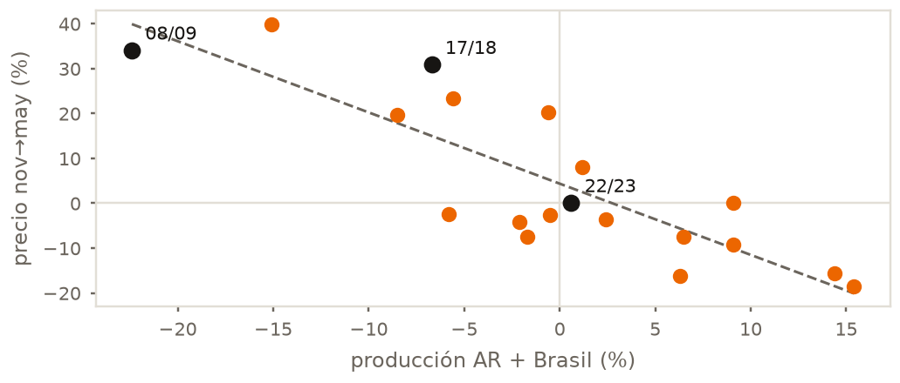
−0,84
A la cosecha manda la oferta de los dos países juntos.
Cada punto es una campaña; en negro, las 3 sequías fuertes. En las 3 la harina subió: +18 % en promedio, contra +2 % el resto.
Verdor: MODIS. Producción: USDA PSD. Precio de la harina: Banco Mundial. 19 campañas.
trubi▮data
DECIDIR · 1
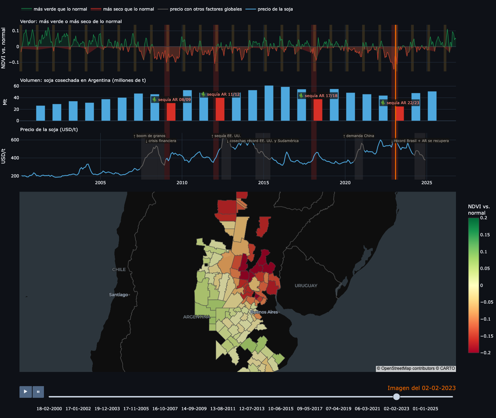
Tres variables, un eje de tiempo, un mapa.
La primera versión tenía cinco selectores y nadie la entendía. Sacar opciones fue la mejora.
Dashboard del repo: uv run streamlit run app/dashboard.py
trubi▮data
DECIDIR · 2
Prioriza dónde mandar a tasar daños.
Ajusta compras, camiones y puerto.
Anticipa pedidos de refinanciación.
Planifica la emergencia agropecuaria.
Un modelo vale por la decisión que cambia. Si nadie hace nada distinto, es un gráfico lindo.
El modelo dice dónde mirar primero. No reemplaza a quien conoce el terreno.
trubi▮data
DECIDIR · 3
PAGO
Estacionamientos
Autos por local → ventas de una cadena.
PAGO
Tanques de petróleo
Menos crudo, el techo baja y la sombra interior crece.
GRATIS
Helada del café
Temperatura y verdor en Brasil → la cosecha siguiente.
GRATIS
Sequía y soja
Verdor y lluvia → toneladas y precio.
GRATIS
Incendios e inundaciones
Focos de calor y agua en superficie → daños y zonas a evacuar.
Siempre igual: algo que se ve desde arriba, medido contra lo normal, cruzado con lo que querés anticipar.
Dibujos ilustrativos, no imágenes reales.
trubi▮data
PARA LLEVARSE
trubi▮data
RECURSOS
EL REPO DE LA CHARLA
Notebook que corre en Colab sin instalar nada, los datos ya procesados y el dashboard.
IDEAS CON EL MISMO MOLDE
Cambiar soja por maíz o trigo. Incendios con FIRMS. Inundaciones con radar de Sentinel-1. Viñedos y heladas en Mendoza.
Por dónde empezar
trubi▮data
CIERRE
Lucas Trubiano · trubidata.com · Tomemos un café
trubi▮data